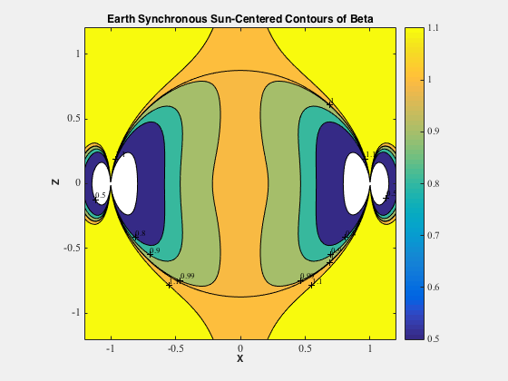
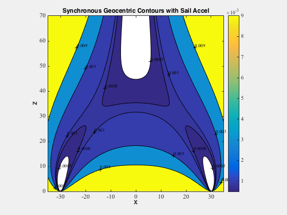
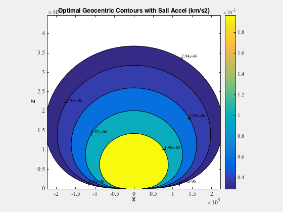

Sail orbit contours.
This demo will take a few minutes to run.
Since version 7. ------------------------------------------------------------------------ See also NonKeplerianSun and NonKeplerianPlanet., Constant, TitleS, Accel, SailOrbitContours ------------------------------------------------------------------------
Contents
%------------------------------------------------------------------------------- % Copyright (c) 2007 Princeton Satellite Systems, Inc. % All rights reserved. %-------------------------------------------------------------------------------
Heliocentric, Non-dimensional, Earth-synchronous surfaces
%-------------------------------------------- z = [-1.2 1.2]; rho = z; beta = [0.5 0.8 0.9 0.99 1 1.1]; omega = 1; disp('Working on Earth synchronous contours...') SailOrbitContours( @NonKeplerianSun, beta, rho, z, omega ); TitleS('Earth Synchronous Sun-Centered Contours of Beta')
Working on Earth synchronous contours...
Geocentric non-dimensional
General synchronous surfaces for 30*R0 See McInnes (1999) Fig. 5.14 on p. 200 --------------------------------------
z = [0 70]; rho = [-35 35]; accel = [5e-4 8e-4 1e-3 3e-3 9e-3]; omega = 30^-1.5; disp('Working on synchronous geocentric contours...') SailOrbitContours( @NonKeplerianPlanet, accel, rho, z, omega ); TitleS('Synchronous Geocentric Contours with Sail Accel')
Working on synchronous geocentric contours...
Geocentric with dimensions
Surfaces of optimal orbit rate See McInnes (1999) Fig. 5.16 on p. 203
%-------------------------------------- Re = Constant('equatorial radius earth'); z = [0 70]*Re; rho = [-35 35]*Re; accel = [2.94 3.93 5.89 9.82 19.62]*1e-6; omega = []; mu = Constant('mu earth'); disp('Working on optimal geocentric contours...') SailOrbitContours( @NonKeplerianPlanet, accel, rho, z, omega, mu ); TitleS('Optimal Geocentric Contours with Sail Accel (km/s2)') %-------------------------------------- % PSS internal file version information %--------------------------------------
Working on optimal geocentric contours...